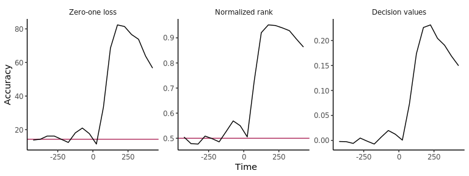
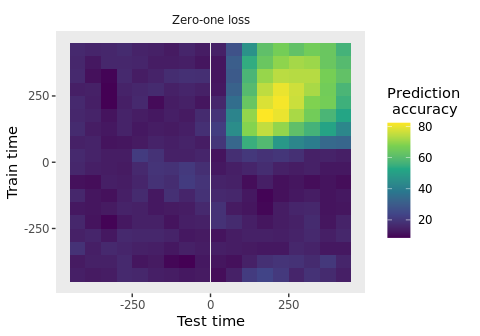

Overview
Neural decoding is a data analysis method that uses pattern classifiers to predict experimental conditions based on neural activity. The Neural Decoding in R (NDR) package makes it easy to do neural decoding analyses in R.
Installation
You can install NeuroDecodeR package from github using:
# install.packages("devtools")
devtools::install_github("emeyers/NeuroDecodeR")Documentation
The documentation for this package is available at: https://emeyers.github.io/NeuroDecodeR/
To get started we recommend you read the introductory tutorial
Usage
The package is based on 5 abstract object types:
-
Datasources (DS): generate training and test sets. -
Feature preprocessors (FP): apply preprocessing to the training and test sets. -
Classifiers (CL): learn relationships on the training set and make predictions on the test data. -
Result Metrics (RM): summarize the prediction accuracies. -
Cross-validators (CV): take the DS, FP and CL objects and run a cross-validation decoding procedure.
By combing different versions of these 5 object types together, it is possible to run a range of different decoding analyses.
Below is a brief illustration of how to use the NDR to do a simple decoding analysis. To learn how to use the NDR please see the documentation website and the package vignettes.
library(NeuroDecodeR)
# file to data in "binned format"
basedir_file_name <- system.file(file.path("extdata", "ZD_150bins_50sampled.Rda"), package="NeuroDecodeR")
# create the DS, FP, CL, RM, and CV objects
ds <- ds_basic(basedir_file_name, 'stimulus_ID', 5, num_label_repeats_per_cv_split = 3)
fps <- list(fp_zscore())
cl <- cl_max_correlation()
rms <- list(rm_main_results(), rm_confusion_matrix())
cv <- cv_standard(datasource = ds,
classifier = cl,
feature_preprocessors = fps,
result_metrics = rms,
num_resample_runs = 3)
# run a decoding analysis (this takes a few minutes)
DECODING_RESULTS <- run_decoding(cv)
#> | | | 0% | |======================= | 33% | |=============================================== | 67% | |======================================================================| 100%
# plot the results for three different result types
plot(DECODING_RESULTS$rm_main_results, results_to_show = 'all', type = 'line')
# create a temporal cross decoding plot
plot(DECODING_RESULTS$rm_main_results)
Running an analysis using the magrittr pipe (%>%)
One can also run a decoding analysis using the magrittr pipe (%>%) operator to string together the different NDR objects as shown below.
library(magrittr)
basedir_file_name <- system.file(file.path("extdata", "ZD_500bins_500sampled.Rda"), package="NeuroDecodeR")
DECODING_RESULTS <- basedir_file_name %>%
ds_basic('stimulus_ID', 6, num_label_repeats_per_cv_split = 3) %>%
cl_max_correlation() %>%
fp_zscore() %>%
rm_main_results() %>%
rm_confusion_matrix() %>%
cv_standard(num_resample_runs = 3) %>%
run_decoding()
#> | | | 0% | |======================= | 33% | |=============================================== | 67% | |======================================================================| 100%
plot(DECODING_RESULTS$rm_confusion_matrix)